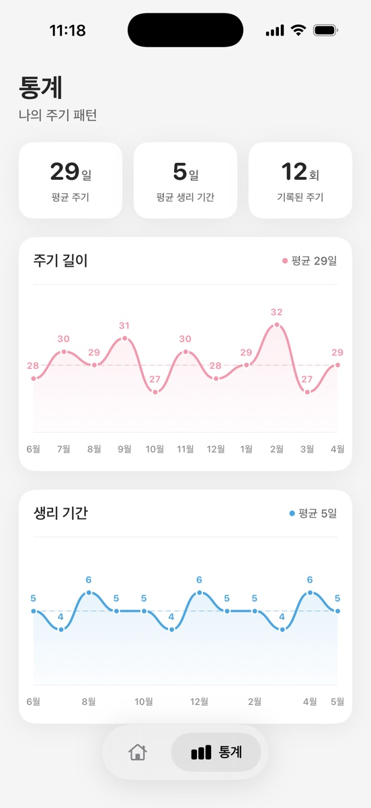

주기 건강
생리 주기는 점수가 아니라 패턴입니다: Cycle Health 체크인
Cycle Health는 하나의 완벽한 숫자를 맞추는 일이 아닙니다. 어떤 생리 패턴을 기록하면 좋은지, 변화는 어떻게 읽고 언제 진료받아야 하는지 정리했습니다.
MiniCycle
생리 날짜를 기록하고, 배란일과 가임기 추정을 확인하고, 깔끔한 홈 화면 위젯으로 현재 주기 상태를 빠르게 봅니다.

MiniCycle은 월간 캘린더, 일별 기록, 예측, 위젯을 중심에 두고 불필요한 기능을 줄였습니다.

주기 건강
Cycle Health는 하나의 완벽한 숫자를 맞추는 일이 아닙니다. 어떤 생리 패턴을 기록하면 좋은지, 변화는 어떻게 읽고 언제 진료받아야 하는지 정리했습니다.

앱 사용법
지난 생리 시작일 기록을 놓쳤을 때 예정일에 생기는 변화, 나중에 날짜를 추가하는 방법, 정확한 날짜가 기억나지 않을 때의 원칙을 설명합니다.
주기 건강
예상 생리일이 아닌데 소량의 피가 비치면 원인을 색이나 날짜만으로 알기는 어렵습니다. 병원에 갈 때 도움이 되는 기록과 서둘러 확인할 신호를 정리했습니다.
지원, 버그 제보, 개인정보 문의는 chwookqwe@gmail.com으로 보내주세요.